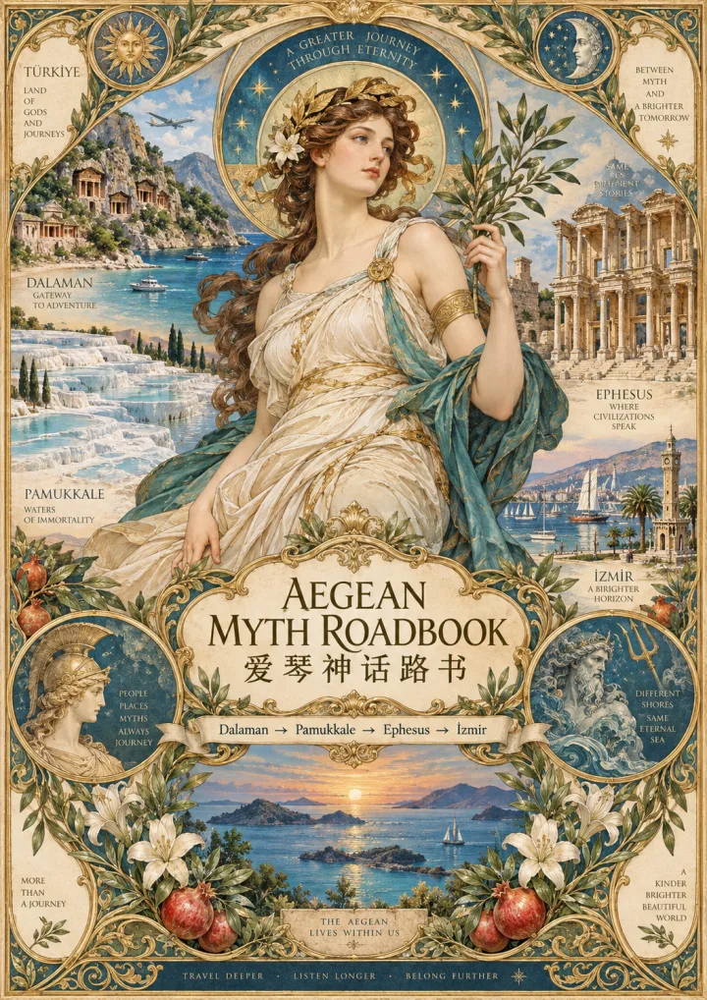

真实地图 · 中英文 · 文明、地貌、神话、港口与海路Real map · bilingual · civilization, landscape, myth, ports and sea routes
路线示意（Cultural Route），非逐路导航。主线：达拉曼机场 → 棉花堡 / 希拉波利斯 → 以弗所 → 伊兹密尔机场。金色为文化支线；实际导航请用 Google 地图。Cultural route schematic — not turn-by-turn. Main: Dalaman Airport → Pamukkale / Hierapolis → Ephesus → İzmir Airport. Gold = cultural branches; use Google Maps for real navigation.
每一章都先看土地，再看城市和神话；《奥德赛》只作为可选文学旁注。Each chapter starts from the land, then the city and myth; the Odyssey remains an optional literary aside.